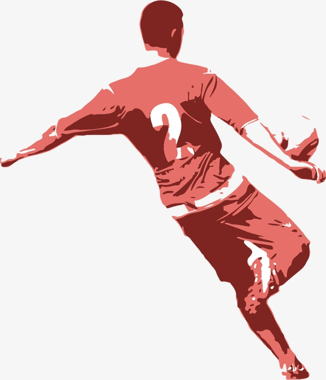
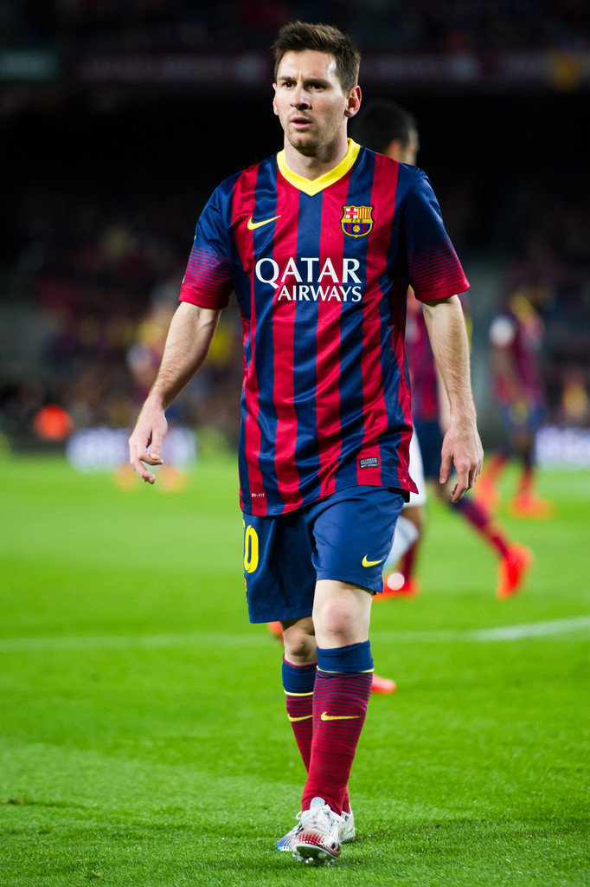
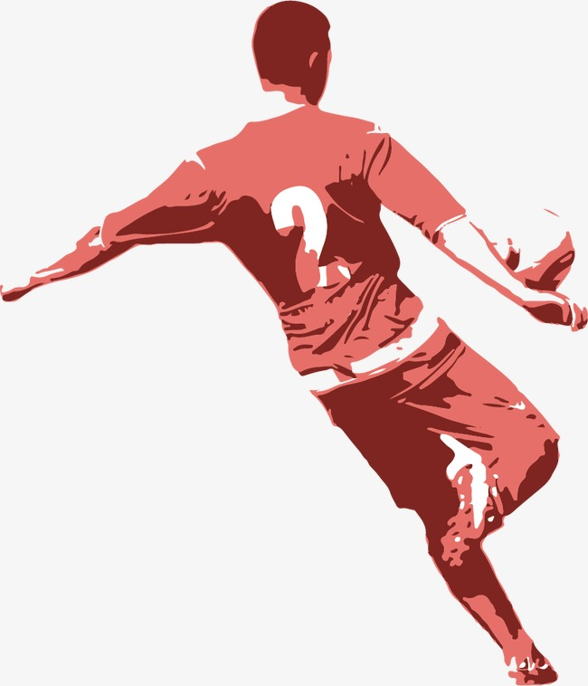
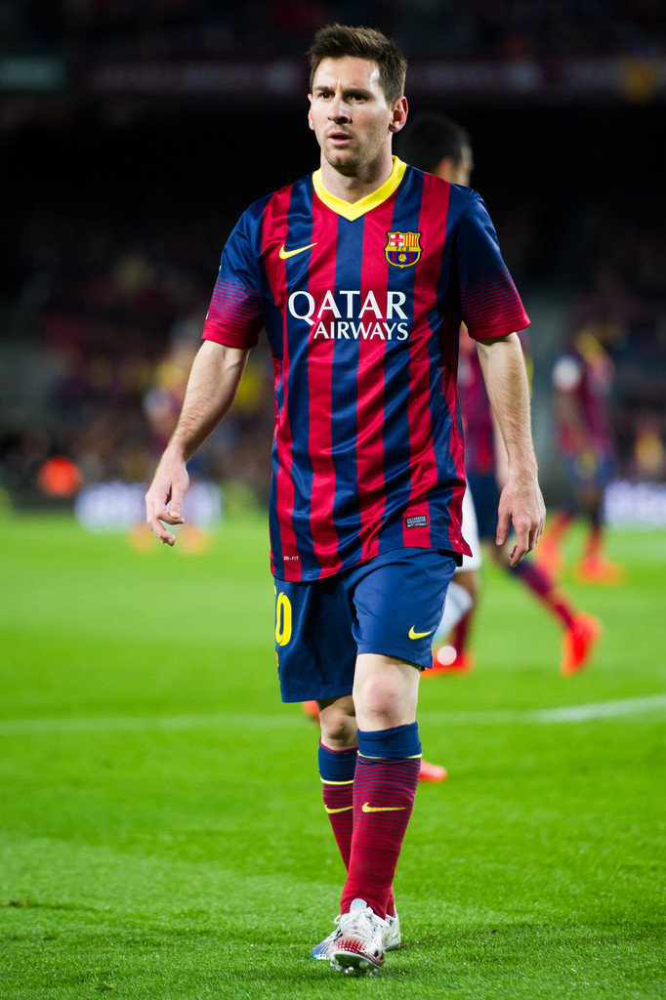

My Favorite Sport
 



My favorite sport is soccer because for me this sport is very easy to play but other people said that this sport is very difficult to play because you’re always running but I agreed that because its difficult football field in more than 90 minutes. I have a favorite player in this sport and his is Lionel Messi. He is an argentine professional football player who plays as a forward and captains both Spanish club Barcelona and Argentina national team. I wish that one day I will be meet him and talk to him.